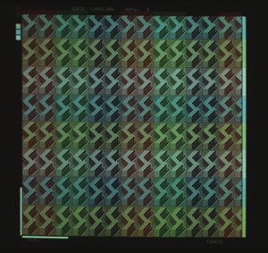
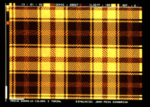

D'altra banda, existeixen aplicacions específiques de CAD en 2D quan l'aplicació així ho requereix. Com exemples podem posar el disseny de circuits i esquemes elèctrics i electrònics, els sistemes de distribució en planta - distribució de mobles en un apartament o en una cuina, distribució de màquines en un taller, distribució dels trossos a tallar d'una peça de roba en una aplicació de tall i confecció -, o bé el disseny de nous models de teixits. En aquestes aplicacions el model geomètric és 2D, la interacció és clàssica, i la visualització pot ser realista o bé simbòlica. Veiem alguns exemples del disseny de teixits:
|  |  |